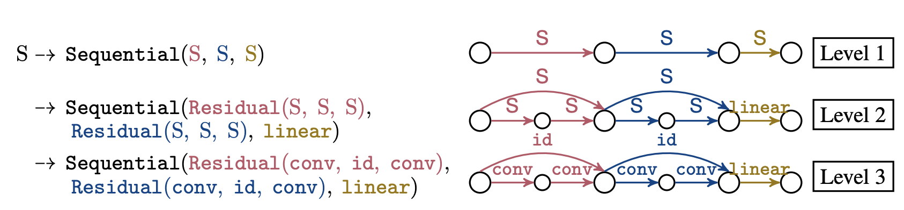
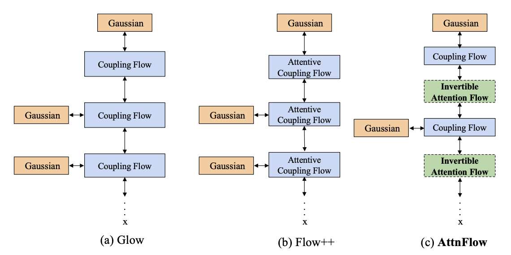
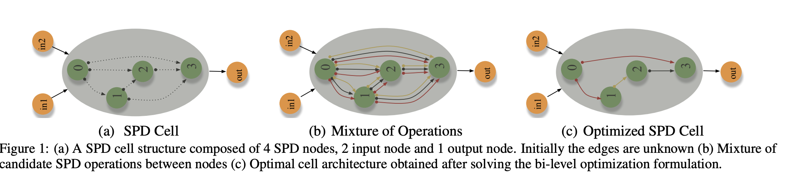
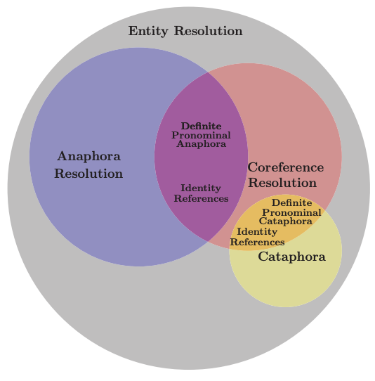

@inproceedings{sukthanker2024hw,
title={HW-GPT-Bench: Hardware-Aware Architecture Benchmark for Language Models},
author={Sukthanker, Rhea Sanjay and Zela, Arber and Staffler, Benedikt and Klein, Aaron and Franke, Jörg KH and Purucker, Lennart and Hutter, Frank},
booktitle={Neural Information Processing Systems Datasets and Benchmarks Track},
year={2024},
}
@inproceedings{dooley2024rethinking,
title={Rethinking bias mitigation: Fairer architectures make for fairer face recognition},
author={Dooley, Samuel and Sukthanker, Rhea and Dickerson, John and White, Colin and Hutter, Frank and Goldblum, Micah},
booktitle={Neural Information Processing Systems},
year={2023},
}

[C23] Construction of Hierarchical Neural Architecture Search Spaces based on Context-free Grammar
Simon Schrodi, Danny Stoll, Binxin Ru, Rhea Sanjay Sukthanker, Thomas Brox, Frank Hutter
@inproceedings{schrodi2024construction,
title={Construction of Hierarchical Neural Architecture Search Spaces based on Context-free Grammar},
author={Schrodi, Simon and Stoll, Danny and Ru, Binxin and Sukthanker, Rhea Sanjay and Brox, Thomas and Hutter, Frank},
booktitle={Neural Information Processing Systems},
year={2023},
}
2022

[C22] Generative flows with invertible attentions
Rhea Sukthanker, Zhiwu Huang, Suryansh Kumar, Radu Timofte, Luc Van Gool
@inproceedings{sukthanker2022generative,
title={Generative flows with invertible attentions},
author={DSukthanker, Rhea Sanjay and Huang, Zhiwu and Kumar, Suryansh and Timofte, Radu and Van Gool, Luc},
booktitle={Proceedings of the IEEE/CVF Conference on Computer Vision and Pattern Recognition},
year={2022},
}
2021

[C21] Neural Architecture Search of SPD Manifold Networks
Rhea Sukthanker, Zhiwu Huang, Suryansh Kumar, Erik Goron Endsjo, Yan Wu, Luc Van Gool
@inproceedings{ijcai2021-413,
title={Neural Architecture Search of SPD Manifold Networks},
author={Sukthanker, Rhea Sanjay and Huang, Zhiwu and Kumar, Suryansh and Endsjo, Erik Goron and Wu, Yan and Van Gool, Luc},
booktitle={Proceedings of the Thirtieth International Joint Conference on Artificial Intelligence, {IJCAI-21}},
year={2021},
}
2020

[C20] Anaphora and coreference resolution: A review
Rhea Sukthanker, Soujanya Poria, Erik Cambria, Ramkumar Thirunavukarasu
@inproceedings{sukthanker2020anaphora,
title={Anaphora and coreference resolution: A review},
author={Sukthanker, Rhea and Poria, Soujanya and Cambria, Erik and Thirunavukarasu, Ramkumar},
booktitle={Information Fusion},
year={2020},
}